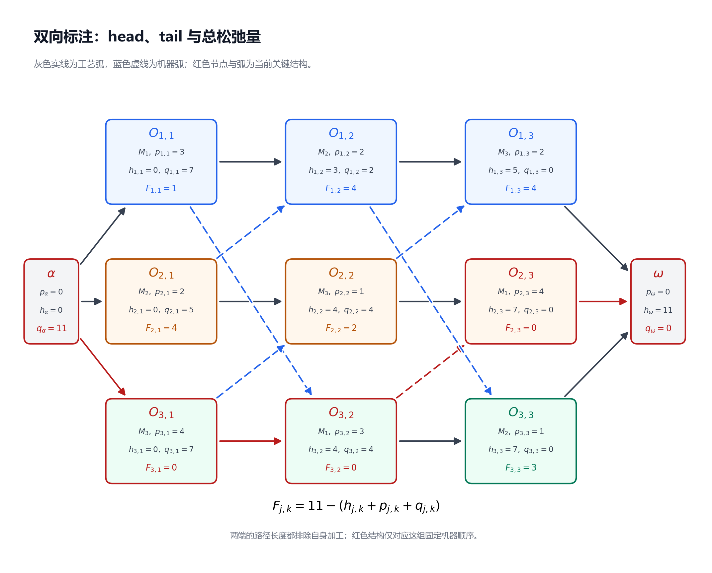
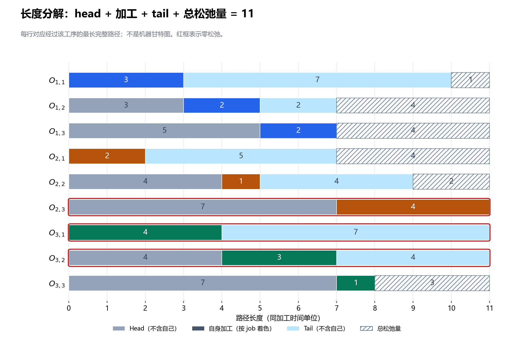
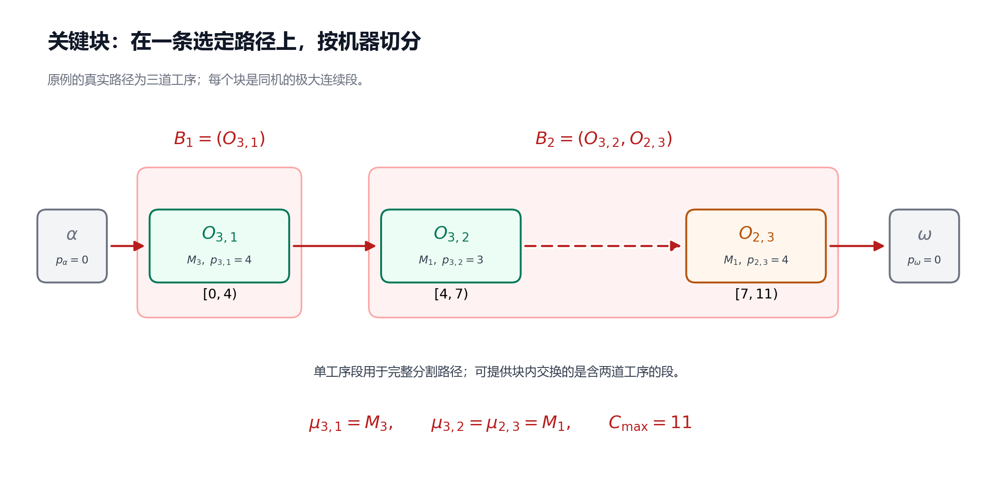

第 4 节：关键路径、head/tail、松弛量与关键块¶
状态：第一版，待 review。
本节目标：能从固定机器顺序的图中计算 head、tail 与松弛量，识别关键工序、关键弧和关键块，并说明这些结构对后续搜索有什么用、又不能保证什么。
前置：第 3 节：拓扑排序、最长路与 Decoder。继续采用相同基础模型：所有 job 在时间 0 可投入，真实工序加工时间为正，机器始终可用，工序不可抢占，工序间允许等待；没有换型时间、额外交期或机器日历。
4.1 算出了 11，接下来应该盯住谁？¶
上一节的 decoder 已经给出 \(C_{\max}=11\)。如果想让车间更早完成，接下来要回答：这个 11 是被哪些加工和先后关系撑起来的？
先把贯穿实例的数据放在一起。每个单元格表示“指定机器，加工时长”：
| Job | 第一道工序 | 第二道工序 | 第三道工序 |
|---|---|---|---|
| \(J_1\) | \(O_{1,1}\)：\((M_1,3)\) | \(O_{1,2}\)：\((M_2,2)\) | \(O_{1,3}\)：\((M_3,2)\) |
| \(J_2\) | \(O_{2,1}\)：\((M_2,2)\) | \(O_{2,2}\)：\((M_3,1)\) | \(O_{2,3}\)：\((M_1,4)\) |
| \(J_3\) | \(O_{3,1}\)：\((M_3,4)\) | \(O_{3,2}\)：\((M_1,3)\) | \(O_{3,3}\)：\((M_2,1)\) |
工艺路线仍为每个 job 的第一、第二、第三道工序依次加工，固定机器顺序仍为：
考虑两道同样从时间 0 开始的工序：
- \(O_{1,1}\) 从 0 加工到 3。它完成后，\(M_1\) 还要等到 4，才能加工工艺前序尚未结束的 \(O_{3,2}\)。
- \(O_{3,1}\) 从 0 加工到 4。它一结束，\(O_{3,2}\) 就开始；\(O_{3,2}\) 一结束，\(O_{2,3}\) 就开始，后者到 11 才结束。
这提示我们：加工时间最长、机器总负荷最大、开始最早，都不能单独定义“关键”。要看某道工序前后的整条依赖链。
4.2 关键路径：一条达到最大完工时间的依赖链¶
本节的图记为 \(G=(V,E)\)。节点包含真实工序、虚拟起点 \(\alpha\) 与虚拟终点 \(\omega\)；\(E\) 包含工艺弧、起终点连接弧及固定机器队列的相邻弧。图已经通过判环检查，是 DAG。
沿用上一节的弧权约定：
关键路径（critical path）是从 \(\alpha\) 到 \(\omega\) 的一条最长路径。对固定机器顺序的最早排程，它的长度等于 \(C_{\max}\)。
本例的一条关键路径是：
长度为 \(0+4+3+4=11\)。真实工序的加工区间依次为 \([0,4)\)、\([4,7)\)、\([7,11)\)：前一道完成，后一道立即开始。这条链同时包含工艺关系与机器关系。
为什么关键路径上的相邻工序没有等待空隙？若路径上的某条弧 \(u\to v\) 满足 \(s_v>s_u+p_u\)，那么到 \(v\) 的最早时刻比该路径此前累计的时长更大，接上原来的后半段就会给出一条更长的路径，与“已经最长”矛盾。第 4.7 小节会把这个结论写成可检查的等式。
这里的“关键”依赖于 当前机器顺序和加工时间。改变机器顺序后，这条路径可能消失；它证明当前顺序无法早于 11 完成，不能单凭它证明整个 JSSP 的全局最优。
4.3 Head 与 tail：把一条链拆成前、自己、后¶
为了不枚举所有路径，我们给每个节点保存两个汇总量。\(u\)、\(v\)、\(w\) 是一般节点；对于真实工序 \(v=O_{j,k}\)，写 \(p_v=p_{j,k}\)、\(h_v=h_{j,k}\)、\(q_v=q_{j,k}\)。
| 记号 | 名称 | 本节采用的含义 | 是否包含 \(p_v\)？ |
|---|---|---|---|
| \(h_v\) | Head，前部长度 | 从 \(\alpha\) 到 \(v\) 的最长路径长度，即最早开始时刻 | 不包含 |
| \(q_v\) | Tail，后部长度 | 从 \(v\) 完成后到 \(\omega\)，沿依赖路径还需经历的最长加工长度 | 不包含 |
| \(h_v+p_v+q_v\) | 经过 \(v\) 的最长完整路径长度 | 前部、自己、后部三段相加 | 包含一次 |
所以，head 就是上一节的 \(d_v\)，现在使用 \(h_v\) 是为了与 tail 配对：
其中 \(\operatorname{Pred}(v)\) 是 \(v\) 的直接前序集合，按拓扑顺序计算即可。
Tail 看的是后继。令 \(\operatorname{Succ}(v)\) 为 \(v\) 的直接后继集合，则：
要按 逆拓扑顺序 计算：先算后继，再算当前节点。若接下来走向 \(w\)，当前工序完成后还要经历 \(w\) 的加工和 \(w\) 的后部，所以加的是 \(p_w\)。
尤其要注意：按本节弧权，从节点 \(v\) 到 \(\omega\) 的最长路径长度是 \(p_v+q_v\)，因为第一条出弧已经携带 \(p_v\)。因此：
有些文献把包含自身时长的后向距离也称为 tail；阅读时应先检查定义。本节始终使用“不包含自身加工时间”的 \(q_v\)。Jain、Rangaswamy 与 Meeran 的原始研究稿第 1.2 小节采用了这一 head/tail 定义，并给出关键工序的判据。
Tail 也不是实际排程中“从完成到全车间结束”的钟表时间。例如 \(O_{1,3}\) 没有真实后继，\(q_{1,3}=0\)，但它在 7 完成，车间还要到 11 才全部完成。那四个单位属于其他分支的加工，并非它后面的依赖链。
4.4 从终点往前，完整手算 tail¶
上一节的一种拓扑顺序为：
将它反过来，逐节点计算。表中的候选值是 \(p_w+q_w\)。
| 本次计算节点 | 后继候选值 | Tail \(q_v\) |
|---|---|---|
| \(\omega\) | 定义为 0 | 0 |
| \(O_{1,3}\) | \(\omega\)：\(0+0=0\) | 0 |
| \(O_{2,3}\) | \(\omega\)：\(0+0=0\) | 0 |
| \(O_{3,3}\) | \(\omega\)：\(0+0=0\) | 0 |
| \(O_{2,2}\) | \(O_{2,3}\)：\(4+0=4\)；\(O_{1,3}\)：\(2+0=2\) | 4 |
| \(O_{3,2}\) | \(O_{3,3}\)：\(1+0=1\)；\(O_{2,3}\)：\(4+0=4\) | 4 |
| \(O_{1,2}\) | \(O_{1,3}\)：\(2+0=2\)；\(O_{3,3}\)：\(1+0=1\) | 2 |
| \(O_{3,1}\) | \(O_{3,2}\)：\(3+4=7\)；\(O_{2,2}\)：\(1+4=5\) | 7 |
| \(O_{2,1}\) | \(O_{2,2}\)：\(1+4=5\)；\(O_{1,2}\)：\(2+2=4\) | 5 |
| \(O_{1,1}\) | \(O_{1,2}\)：\(2+2=4\)；\(O_{3,2}\)：\(3+4=7\) | 7 |
| \(\alpha\) | \(O_{1,1}\)：\(3+7=10\)；\(O_{2,1}\)：\(2+5=7\)；\(O_{3,1}\)：\(4+7=11\) | 11 |
例如 \(O_{3,2}\) 完成后，有两条后续分支：自己的最后一道工序耗时 1，或机器队列中的 \(O_{2,3}\) 耗时 4。它们的限制要同时满足，因此取较长的 4；不能把两条分支相加成 5。
对虚拟节点也有 \(h_\alpha=0\)、\(q_\alpha=11\)、\(h_\omega=11\)、\(q_\omega=0\)。它们可用于核对两次计算是否一致：从前往后和从后往前，都应得到整张图的最长路径长度 11。

图中每道工序的 \(h_{j,k}\)、\(q_{j,k}\) 都不包含自身时长；\(F_{j,k}\) 是下面定义的总松弛量。红色标记对应当前顺序下的关键结构，不表示全局最优性。
4.5 总松弛量：不晚于 11 完成，还有多少余地？¶
先说明 \(h_v+p_v+q_v\) 为什么有用。选取一条最长前部路径和一条最长后部路径，在 \(v\) 处拼接，就得到经过 \(v\) 的路径。DAG 中这两段不会在 \(v\) 之外重复节点，否则会形成有向环。因此它们可以拼成一条完整路径。
反过来，任何经过 \(v\) 的完整路径，其前部不长于 \(h_v\)，后部不长于 \(q_v\)。所以，\(h_v+p_v+q_v\) 恰好等于 所有经过 \(v\) 的完整路径中最长一条的长度。
下面固定共同完成上限 \(T=11\)。它取自当前顺序最早排程的 \(C_{\max}\)，是分析用的时间上限，基础问题并没有额外输入一项交期。
若要全部在不晚于 \(T\) 时完成，从 \(v\) 的开始时刻起，至少还要留下 \(p_v+q_v\) 的时间。因此 \(v\) 的最迟开始时刻记为 \(\ell_v\)：
定义 总松弛量（total float / total slack）\(F_v\) 为最迟开始与最早开始之差：
这里 \(F_{j,k}=F_{O_{j,k}}\)、\(\ell_{j,k}=\ell_{O_{j,k}}\)。在当前可行图且 \(T=C_{\max}\) 的条件下，每条路径长度都不超过 \(T\)，所以 \(F_v\ge0\)。
| 工序 | \(h_{j,k}\) | \(p_{j,k}\) | \(q_{j,k}\) | \(h_{j,k}+p_{j,k}+q_{j,k}\) | \(\ell_{j,k}\) | \(F_{j,k}\) |
|---|---|---|---|---|---|---|
| \(O_{1,1}\) | 0 | 3 | 7 | 10 | 1 | 1 |
| \(O_{1,2}\) | 3 | 2 | 2 | 7 | 7 | 4 |
| \(O_{1,3}\) | 5 | 2 | 0 | 7 | 9 | 4 |
| \(O_{2,1}\) | 0 | 2 | 5 | 7 | 4 | 4 |
| \(O_{2,2}\) | 4 | 1 | 4 | 9 | 6 | 2 |
| \(O_{2,3}\) | 7 | 4 | 0 | 11 | 7 | 0 |
| \(O_{3,1}\) | 0 | 4 | 7 | 11 | 0 | 0 |
| \(O_{3,2}\) | 4 | 3 | 4 | 11 | 4 | 0 |
| \(O_{3,3}\) | 7 | 1 | 0 | 8 | 10 | 3 |
例如 \(O_{1,1}\) 的最长前部为 0，自身加工为 3，最长后部为 7，合计 10，距离共同上限 11 还差 1。

图中每行表示经过该工序的最长路径长度及其余量，不是机器甘特图；灰色 head 和浅蓝色 tail 是路径长度汇总。三道零松弛工序的三段长度正好达到 11。
为什么称 \(\ell_v\) 为“最迟”，而不只是一个必要上限？把所有节点设为 \(s_v=\ell_v\)，并取 \(s_\omega=T\)。对于任意弧 \(v\to w\)，tail 的递推给出 \(q_v\ge p_w+q_w\)，于是：
所以全部先后约束成立；又因为 \(\ell_v\ge h_v\ge0\)，真实工序不会在时间 0 之前开始。这组最迟开始时刻本身就是一个可行安排，每道工序都能在该安排中达到自己的 \(\ell_v\)。
对于实际排程，仍将虚拟起点固定在 0；本例公式也恰好给出 \(\ell_\alpha=T-q_\alpha=0\)。最迟排程允许主动等待，通常与最早排程不同，但在本例仍于 11 完成。
由经过工序的最长路径性质，得到重要判据：
这里“关键工序”表示位于 至少一条关键路径 上。本例是 \(O_{3,1}\)、\(O_{3,2}\)、\(O_{2,3}\)。若把完成上限选成大于当前 \(C_{\max}\) 的数，算出的松弛量会整体增加，零松弛判据就不能照搬来识别原图的关键工序。
4.6 总松弛量不等于可以单独移动的空档¶
\(O_{1,1}\) 的总松弛量是 1。能否只把它从 \([0,3)\) 移到 \([1,4)\)，其他工序保持原来的时间？
不可以。\(O_{1,2}\) 还在 3 开始，而自己的工艺前序要到 4 才结束，约束立刻被破坏。
但允许后继一起调整，确实能把 \(O_{1,1}\) 延迟一个单位，仍在 11 完成：
| 工序 | 原最早加工区间 | 调整后的加工区间 |
|---|---|---|
| \(O_{1,1}\) | \([0,3)\) | \([1,4)\) |
| \(O_{1,2}\) | \([3,5)\) | \([4,6)\) |
| \(O_{1,3}\) | \([5,7)\) | \([6,8)\) |
| 其余真实工序 | 沿用第 3 节的时间 | 保持原时间 |
检查 \(M_1\) 上 \(O_{1,1}\) 到 4 完成、\(O_{3,2}\) 从 4 开始；\(M_2\) 上 \(O_{1,2}\) 到 6 完成、\(O_{3,3}\) 从 7 开始；\(M_3\) 上 \(O_{2,2}\) 到 5 完成、\(O_{1,3}\) 从 6 开始，均不冲突。\(J_2\) 仍在 11 完成，所以 \(C_{\max}\) 不变。
如果要求“其余工序都保持最早时刻”，可定义 自由松弛量（free float）\(f_v\)：
它表示只延后当前工序、所有直接后继的开始时刻保持不动，最多能延后多少。这里将 \(h_\omega=T\) 也作为最后工序的后继时刻。
对于 \(O_{1,1}\)，两个后继最早在 3 和 4 开始，因此：
对比就很清楚：总松弛量允许协调调整后续时间，自由松弛量要求后续时间保持不动。这两个量都与第 3 节更新最长路时的“松弛操作”不同；后者是算法中的更新动作。
还有一个容易说错的结论：各工序在自己的最早、最迟区间内任选时间，不保证彼此相容。上面只延后 \(O_{1,1}\) 就是反例。但“把全部工序都取各自最迟开始时刻”却是可行的，上一小节已经证明了；不能把这两件事混为一谈。
4.7 怎样找一条关键路径？怎样判断关键弧？¶
可以从 \(\omega\) 向前回溯。当前节点为 \(v\) 时，找一个满足下式的直接前序 \(u\)：
因为 \(h_v\) 本来就是前序候选值的最大值，至少有一个前序达到这个等式。不断回溯到 \(\alpha\)，再把列表反转，就得到一条关键路径。本例的过程为：
| 当前节点 | 前序候选值 | 选中的前序 |
|---|---|---|
| \(\omega\) | \(O_{1,3}\)：7；\(O_{2,3}\)：11；\(O_{3,3}\)：8 | \(O_{2,3}\) |
| \(O_{2,3}\) | \(O_{2,2}\)：5；\(O_{3,2}\)：7 | \(O_{3,2}\) |
| \(O_{3,2}\) | \(O_{3,1}\)：4；\(O_{1,1}\)：3 | \(O_{3,1}\) |
| \(O_{3,1}\) | \(\alpha\)：0 | \(\alpha\) |
于是又得到第 4.2 小节的路径。若多个前序并列，可选择任意一个来找一条路径；若要找全部关键结构，应利用 head/tail 判据，不必枚举所有路径。
一条弧 \(u\to v\) 称为 关键弧，当且仅当它位于至少一条关键路径上。经过这条弧的最长完整路径长度为：
前两项到达 \(v\) 的开始位置，后两项包含 \(v\) 的加工及之后的最长后部。与上面的拼接论证相同，在 DAG 中可据此判断：
例如关键机器弧 \(O_{3,2}\to O_{2,3}\) 满足 \(4+3+4+0=11\)。
也可以使用等价判据：\(u\)、\(v\) 都是关键节点，且 \(h_v=h_u+p_u\)。后一条件表示这条先后约束在最早排程中 取等号，也常称为紧弧。
但仅有等号不够。\(O_{1,1}\to O_{1,2}\) 同样满足 \(3=0+3\)，经过该弧的最长完整路径却只有 \(0+3+2+2=7\)。它是紧弧，却不是关键弧。无等待连接可能出现在非关键分支上。
4.8 有多条关键路径时，零松弛意味着什么？¶
现在做一个小变体：只把 \(p_{1,1}\) 从 3 改为 4，机器顺序和其他加工时间保持不变。
\(O_{3,2}\) 的两个前序此时都在 4 完成，所以它仍在 4 开始，\(O_{2,3}\) 仍在 7 开始、到 11 结束。\(O_{1,2}\) 改为 \([4,6)\)，\(O_{1,3}\) 改为 \([6,8)\)；\(O_{3,3}\) 仍为 \([7,8)\)。新的 \(C_{\max}\) 仍是 11。
现在有两条不同的关键路径：
两条长度都为 \(4+3+4=11\)。\(O_{1,1}\)、\(O_{3,1}\)、\(O_{3,2}\)、\(O_{2,3}\) 都是零松弛工序，但前两道分别出现在不同路径上。
因此，关键工序不一定在程序选出的那一条路径上，也不一定在每一条关键路径上。一次回溯得到的工序集合，可能小于全部零松弛工序的集合。
若在这个变体中把 \(p_{3,1}\) 从 4 减为 3，经过 \(O_{3,1}\) 的那条路径变短，另一条仍长 11，所以 \(C_{\max}\) 仍为 11。这个时长变化只用于理解瓶颈；标准 JSSP 的搜索决策通常是改变机器顺序，而不是任意缩短输入的加工时间。
由此得到一个一般的必要条件：若某条原关键路径连同它的时长完整保留，新图的最长路就仍至少为原来的 \(C_{\max}\)。要严格改善，必须使每条原关键路径都失去原有的长度限制；即便如此，仍可能出现新的同样长或更长的路径，改善并不自动成立。
4.9 关键块：在选定路径上，按机器切成连续段¶
下面回到原始数据，即 \(p_{1,1}=3\)。取关键路径的真实工序部分：
它们的指定机器依次是 \(M_3\)、\(M_1\)、\(M_1\)。把连续使用同一机器的工序切成一段，就得到 关键块（critical block）。
准确地说，给定一条关键路径，关键块是这条路径上使用同一台机器的 极大连续工序子序列。“极大”表示不能再向左或向右扩展一个路径工序而仍保持同一机器；不表示这是全图中工序数量最多的块。原始研究稿第 1.2 小节也以此方式分解关键路径。
本节用 \(B_b\) 表示第 \(b\) 个块，允许单道工序构成一段，以便完整分割路径：
有些邻域定义只把至少含两道工序的段称为关键块，因为单道工序无法提供块内交换。按这种约定，本例可用于块内移动的关键块只有 \(B_2\)。阅读算法时要检查采用哪一种约定。

图中的分段依赖于选定的关键路径；全部零松弛工序按机器分组，不能代替这一步。在多关键路径的例子中，不同选路也可能得到不同分块。
\(B_2\) 中两道工序在 \(M_1\) 上相邻加工，区间分别为 \([4,7)\)、\([7,11)\)，中间没有空闲。由于本节使用相邻机器弧且加工时间为正，关键路径上连续同机的工序也必须在机器队列中相邻；若中间还夹着另一道同机工序，它的正时长就会使直接连接无法成为关键路径的一部分。
为什么这对搜索有用？工艺路线由输入固定，而机器先后关系可以选择。关键块把一条限制完工时间的路径中，可通过机器排序影响的连续部分暴露出来，为候选移动提供位置。Nowicki 与 Smutnicki 的原始算法论文确实使用关键路径与工序块构造邻域。具体哪些位置值得交换，以及 N5 如何筛选，将放到第 7 节。
4.10 交换关键块里的工序，会自动改善吗？¶
试着交换 \(B_2\) 中的两道工序，让 \(M_1\) 的队列变为：
其余机器队列、工艺路线与加工时间均不变。注意这次改变的是队列：原来的相邻机器弧要被替换，再由 decoder 重新计算，不能只交换甘特图中的两个矩形。
新的图通过判环检查，最早时间如下：
| 工序 | 原加工区间 | 交换后的最早加工区间 | 改变原因 |
|---|---|---|---|
| \(O_{2,3}\) | \([7,11)\) | \([5,9)\) | 改为等待 \(O_{2,2}\) 到 5 完成；机器前序 \(O_{1,1}\) 已在 3 完成 |
| \(O_{3,2}\) | \([4,7)\) | \([9,12)\) | 改为等待机器前序 \(O_{2,3}\) 到 9 完成 |
| \(O_{3,3}\) | \([7,8)\) | \([12,13)\) | 等待自己的工艺前序 \(O_{3,2}\) 到 12 完成 |
| 其余真实工序 | 沿用第 3 节的时间 | 保持原时间 | 最强前序限制没有改变 |
于是 \(C_1=7\)、\(C_2=9\)、\(C_3=13\)，新的 \(C_{\max}=13\)，反而变差。新图的一条最长路径是：
长度为 \(4+1+4+3+1=13\)。
这说明，关键块提供的是 候选移动的结构依据，不是改善证书。一次移动会同时改变多个前后关系；原路径被打断后，可能形成更长的新路径。一般移动还需检查是否形成有向环，具体邻域若有可行性定理，也必须满足定理的前提。
后续搜索的基本闭环会是：生成候选队列，检查可行性，重新解码，比较目标值，再按算法规则决定是否接受。接受后的解还要重新计算关键结构，不能沿用上一个解的 head、tail 或关键块。
4.11 在 decoder 后增加一次反向扫描¶
不需要枚举全部路径。第 3 节已经算出 head 并得到拓扑列表，只需补一次逆向扫描，就能标记全部关键工序和关键弧。
下面伪代码中，h[v]、q[v]、p[v]、float[v] 分别对应 \(h_v\)、\(q_v\)、\(p_v\)、\(F_v\)；topo 是已通过判环检查的完整拓扑列表，succ、pred 是同一组弧的后继表和前序表。
在本节正确构造的图中，每个真实工序都能沿工艺路线到达 \(\omega\)，所以除 \(\omega\) 外的节点都有后继，不会对空集合取最大值。逆拓扑扫描保证用到的 \(q_w\) 已经计算完成。
两次扫描及逐弧标记的时间复杂度均为 \(O(\lvert V\rvert+\lvert E\rvert)\)；回溯一条路径并分块也在线性范围内。全部关键路径的数量可能很大，但标记全部关键节点、关键弧不需要把所有路径逐条列出。
本例加工时间为整数，可直接比较等式；若实现使用浮点数，需根据时间尺度约定误差容限，避免舍入使理论上的零松弛变成很小的正数或负数。
4.12 八个容易混淆的地方¶
| 容易形成的误解 | 正确理解 |
|---|---|
| Tail 一定是节点到终点的弧权和 | 本节的 \(q_v\) 排除自身时长；弧权和是 \(p_v+q_v\) |
| Tail 等于 \(C_{\max}-c_{j,k}\) | 它只汇总工序后面的依赖路径；其他分支的加工不属于它 |
| 松弛量大于 0，就能只移动这一道工序 | 总松弛量可能需要后继配合调整；只移动自己应看自由松弛量 |
| 每个开始时刻各自落在 \([h_v,\ell_v]\) 内，就一定可行 | 还必须满足全部弧约束；区间不是互相独立的选择空间 |
| 零松弛工序都在当前回溯出的一条路径上 | 它们属于至少一条关键路径；多路径时一次回溯可能漏掉其他关键工序 |
| 相邻加工无等待，就一定是关键弧 | 紧弧还可能位于非关键分支；需检查完整路径长度 |
| 将所有同机零松弛工序合起来，就是一个关键块 | 关键块在选定路径上定义，要求同机、连续、极大 |
| 交换关键块内工序，一定可行且改善 | 要检查候选的可行性并重新解码；本例交换后可行，但目标值从 11 变为 13 |
4.13 自检题¶
先自己计算，再看参考答案。除第 6 题明确使用变体外，均使用原始加工时间。
- \(O_{3,2}\) 的 head、tail、自身加工时间分别是多少？为什么从该节点到 \(\omega\) 的最长弧权和不是它的 tail？
- 手算 \(q_{2,1}\)。它的两个后继分支应该取最大值还是相加？
- 求 \(O_{2,2}\) 的最迟开始时刻与总松弛量。它是否是关键工序？
- \(O_{1,1}\) 的总松弛量为 1。只把它延后 1，其他工序保持最早时刻，为什么不可行？自由松弛量是多少？
- \(O_{1,1}\to O_{1,2}\) 和 \(O_{3,2}\to O_{2,3}\) 都在最早排程中无等待。哪条是关键弧？分别算经过它们的最长完整路径长度。
- 在 \(p_{1,1}=4\) 的变体中，一次回溯选到了经过 \(O_{3,1}\) 的关键路径。能否据此断定 \(O_{1,1}\) 不关键？若再将 \(p_{3,1}\) 改为 3，\(C_{\max}\) 会不会降到 10？
- 原例选定关键路径上的两个极大同机连续段是什么？\(O_{1,1}\) 为什么不属于 \(M_1\) 上那个关键块？
- 交换 \(O_{3,2}\) 与 \(O_{2,3}\) 后，\(O_{3,3}\) 在什么时候开始、结束？新目标值是多少？这说明关键块的用途是什么？
参考答案¶
- \(h_{3,2}=4\)、\(q_{3,2}=4\)、\(p_{3,2}=3\)。从节点到终点的最长弧权和为 \(3+4=7\)，第一条出弧携带自身的 3；tail 从该工序完成以后算起，排除了这个 3。
- \(q_{2,1}=\max(1+4,2+2)=5\)。两个候选分别经 \(O_{2,2}\) 和 \(O_{1,2}\)；取最大值，不把分支串成一条不存在的路径。
- \(\ell_{2,2}=11-1-4=6\)，\(F_{2,2}=6-4=2\)。经过它的最长完整路径长 9，小于 11，因此不关键。
- 它移到 \([1,4)\) 后，\(O_{1,2}\) 仍在 3 开始，违反工艺约束。\(f_{1,1}=\min(3,4)-3=0\)；要使用总松弛量，需让受影响后继一起调整。
- 第一条的完整路径长度为 \(0+3+2+2=7\)，不关键；第二条为 \(4+3+4+0=11\)，是关键机器弧。紧弧与关键弧不能混同。
- 不能。此时 \(h_{1,1}+p_{1,1}+q_{1,1}=0+4+7=11\)，\(O_{1,1}\) 位于另一条关键路径上。将 \(p_{3,1}\) 改为 3 后，经过 \(O_{1,1}\) 的路径仍长 11，\(C_{\max}\) 仍为 11。
- 分别为 \((O_{3,1})\) 和 \((O_{3,2},O_{2,3})\)。\(O_{1,1}\) 虽使用 \(M_1\)，却不在原例的选定关键路径上，且其总松弛量为 1；不能把整条机器队列当成关键块。
- \(O_{3,3}\) 从 12 开始、到 13 完成，新 \(C_{\max}=13\)。关键块指出可考虑改变的机器先后关系；实际效果仍需通过可行性检查与重新解码评估。
4.14 复习速记卡¶
| 以后复习时要立即想起的点 | 本节对应的要点 |
|---|---|
| 关键路径是什么？ | 固定顺序图中，从 \(\alpha\) 到 \(\omega\) 的最长路径 |
| Head 包含自己吗？ | 不包含；\(h_v\) 是最早开始时刻，也是上一节的 \(d_v\) |
| Tail 包含自己吗？ | 本节不包含；从 \(v\) 到 \(\omega\) 的最长弧权和是 \(p_v+q_v\) |
| Tail 怎样递推？ | \(q_\omega=0\)；逆拓扑计算 \(q_v=\max_{w\in\operatorname{Succ}(v)}(p_w+q_w)\) |
| 总松弛量怎么算？ | \(F_v=T-(h_v+p_v+q_v)\)，本节取 \(T=C_{\max}\) |
| 关键工序怎样判断？ | \(F_v=0\)，等价于位于至少一条关键路径上 |
| 怎样找一条关键路径？ | 从 \(\omega\) 沿达到 head 等式的前序回溯到 \(\alpha\) |
| 关键弧怎样判断？ | \(h_u+p_u+p_v+q_v=T\)；仅仅无等待还不够 |
| 关键块是什么？ | 一条选定关键路径上，使用同机的极大连续工序段 |
| 为什么移动后重算？ | 机器弧改变会使路径、时间与关键结构一起改变 |
下一节：构造启发式：SPT、LPT、MWKR 与排程生成。我们已经知道如何评价一组机器顺序；下一步要解决的是，怎样从空排程开始快速造出一组可行顺序。
参考核验：2026-10-08。Head/tail、关键工序与关键块术语对照上文原始研究稿；关键路径与块在邻域中的用途对照原始算法论文。贯穿实例、总松弛量推导、时长变体及交换反例按本节基础模型自行展开。
提交前检查：已核算双向递推、关键节点与关键弧、多路径变体、时间调整和交换反例，检查图文数据及相对链接；已用 CommonMark 与 MathJax 本地预览检查公式、表格、加粗、伪代码与图片。未直接检查 IDE 内置 Markdown 预览。